MAS-0001
Trimming shears
- 180mm (7.09in)
- 150g (0.33lb)
For heavy duty. Original Bonsai shears in Japan. The longest-seller over 50 years.
0000 Standard carbonMAS-0001
For heavy duty. Original Bonsai shears in Japan. The longest-seller over 50 years.
0000 Standard carbon
MAS-S-0001
For heavy duty. Original Bonsai shears in Japan. The longest-seller over 50 years.
S Patent series
MAS-SS-001
For heavy duty. Original Bonsai shears in Japan. The longest-seller over 50 years.
SS premium / made-to-order
MAS-0002
Long handled shears for wide application. The longest-seller over 50 years with No.1.
0000 Standard carbon
MAS-S-0002
Long handled shears for wide application. The longest-seller over 50 years with No.1.
S Patent series
MAS-SS-002
Long handled shears for wide application. The longest-seller over 50 years with No.1.
SS premium / made-to-order
MAS-0028
Middle size shears for small Bonsai or narrow places. Also the longest-seller with No.1 and No.2. HIGH quality shears for advanced class.
0000 Standard carbon
MAS-S-0028
Middle size shears for small Bonsai or narrow places. Also the longest-seller with No.1 and No.2. HIGH quality shears for advanced class.
S Patent series
MAS-SS-028
Middle size shears for small Bonsai or narrow places. Also the longest-seller with No.1 and No.2. HIGH quality shears for advanced class.
SS premium / made-to-order
MAS-0051
Heavy duty durable shears for professionals.
0050 Prime carbon
MAS-0052
Long handled durable shears for professionals.
0050 Prime carbon
MAS-0053
Middle size durable shears for professionals. Highest quality super finished shears, specially made for professionals and advanced amateurs.
0050 Prime carbon
MAS-0101
Highest quality super finished Trimming Shears.
0100 Specially made carbon
MAS-0102
Highest quality super finished Trimming Shears with long handle.
0100 Specially made carbon
MAS-SS-103
The wide application Bud Trimming Shears. Also suitable for small Bonsai trimming work.
SS premium / made-to-order
MAS-0128
Highest quality super finished Trimming Shears middle size.
0100 Specially made carbon
MAS-0201
Heavy duty shears.
0200 Type A / B / C carbon
MAS-S-0201
Heavy duty shears.
S Patent series
MAS-SS-201
Heavy duty shears.
SS premium / made-to-order
MAS-0202
Wide application shears.
0200 Type A / B / C carbon
MAS-S-0202
Wide application shears.
S Patent series
MAS-0228
Suitable for small Bonsai work.
0200 Type A / B / C carbon
MAS-S-0228
Suitable for small Bonsai work.
S Patent series
MAS-SS-228
Suitable for small Bonsai work.
SS premium / made-to-order
MAS-0301

MAS-0302

MAS-0328

MAS-0351

MAS-0352

MAS-0353

MAS-0801

MAS-0802

MAS-8001
For heavy duty. Original Bonsai shears in Japan. The longest-seller over 50 years.
8000 Stainless-coated carbon
MAS-8002
Long handled shears for wide application. The longest-seller over 50 years with No.1.
8000 Stainless-coated carbon
MAS-8028
Middle size shears for small Bonsai or narrow places. Also the longest-seller with No.1 and No.2. HIGH quality shears for advanced class.
8000 Stainless-coated carbon
MAS-8201
Heavy duty shears.
8000 Stainless-coated carbon
MAS-8202
Wide application shears.
8000 Stainless-coated carbon
MAS-8228
Suitable for small Bonsai work.
8000 Stainless-coated carbon
MAS-8801

MAS-8802
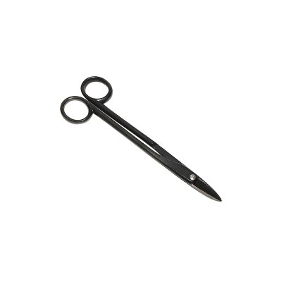
MAS-0003
Extra sharp Bud Shears with long handle.
0000 Standard carbon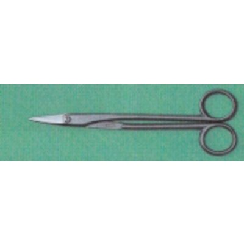
MAS-S-0003
Extra sharp Bud Shears with long handle.
S Patent series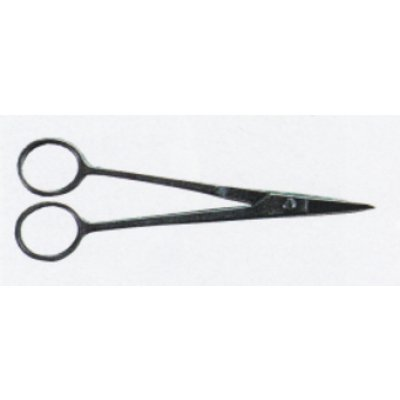
MAS-0005
The handle is open not to hurt the leaves of Pines or Junipers.
0000 Standard carbon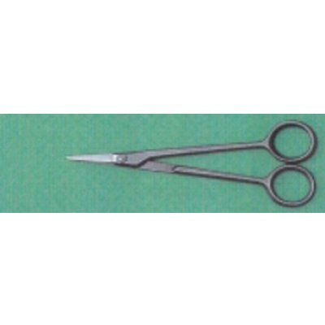
MAS-S-0005
The handle is open not to hurt the leaves of Pines or Junipers.
S Patent series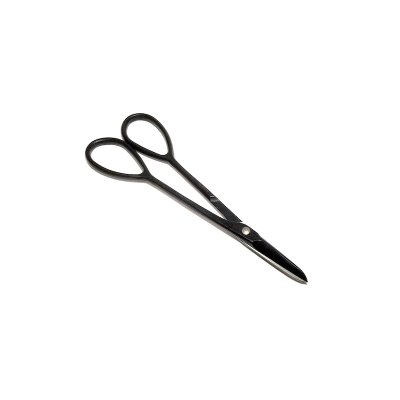
MAS-0103
The wide application Bud Trimming Shears. Also suitable for small Bonsai trimming work.
0000 Standard carbon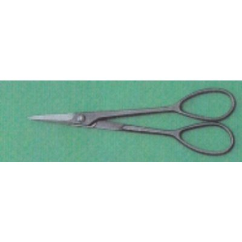
MAS-S-0103
The wide application Bud Trimming Shears. Also suitable for small Bonsai trimming work.
S Patent series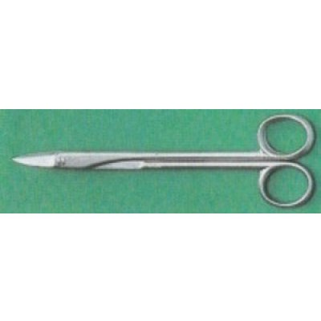
MAS-8003
Extra sharp Bud Shears with long handle.
8000 Stainless-coated carbon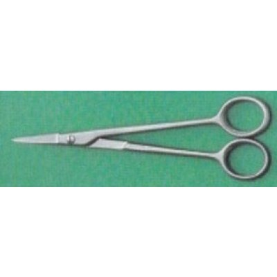
MAS-8005
The handle is open not to hurt the leaves of Pines or Junipers.
8000 Stainless-coated carbon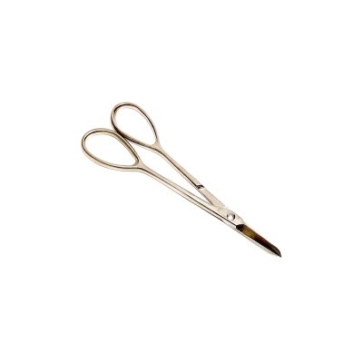
MAS-8103
The wide application Bud Trimming Shears. Also suitable for small Bonsai trimming work.
8000 Stainless-coated carbon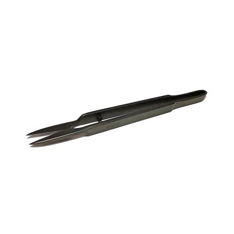
MAS-0006
MASAKUNI's original shears specially made for Defoliation cutting.
0000 Standard carbon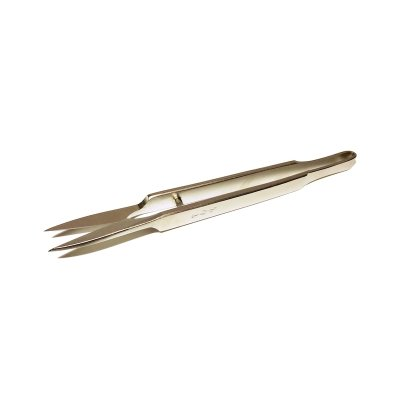
MAS-8006
MASAKUNI's original shears specially made for Defoliation cutting.
8000 Stainless-coated carbon
MAS-0016
Very famous original cutter No.16. The best-seller tool in Bonsai world. Use at the branch diameter below half of the blade.
0000 Standard carbon
MAS-0061

MAS-0116
Very handy cutter for middle and small size branches. Also the best-seller with No.16. Use at the branch diameter below half of the blade.
0000 Standard carbon
MAS-0161

MAS-0216
Extra narrow cutter for twig. Very convinient tool for group planting, SATSUKI AZALEA or narrow places. This tool have come to be the mew best-seller tool among the advanced Bonsai people. Use at the twig diameter below 3mm.
0000 Standard carbon
MAS-0316
Large size mighty cutter for heavy duty work. Use at the branch diameter below half of the blade.
0000 Standard carbon
MAS-0416

MAS-0516

MAS-0616

MAS-0716
The spherical blades brings the beautiful concave cutting end. Use at the branch diameter below half of the blade.
0000 Standard carbon
MAS-0816
Handy type spherical blade cutter. Use at the branch diameter below half of the blade.
0800 S-series (ergonomic)
MAS-8016
Very famous original cutter No.16. The best-seller tool in Bonsai world. Use at the branch diameter below half of the blade.
8000 Stainless-coated carbon
MAS-8061

MAS-8116
Very handy cutter for middle and small size branches. Also the best-seller with No.16. Use at the branch diameter below half of the blade.
8000 Stainless-coated carbon
MAS-8161

MAS-8216
Extra narrow cutter for twig. Very convinient tool for group planting, SATSUKI AZALEA or narrow places. This tool have come to be the mew best-seller tool among the advanced Bonsai people. Use at the twig diameter below 3mm.
8000 Stainless-coated carbon
MAS-8316
Large size mighty cutter for heavy duty work. Use at the branch diameter below half of the blade.
8000 Stainless-coated carbon
MAS-8716
The spherical blades brings the beautiful concave cutting end. Use at the branch diameter below half of the blade.
8000 Stainless-coated carbon
MAS-8816
Handy type spherical blade cutter. Use at the branch diameter below half of the blade.
8000 Stainless-coated carbon
MAS-0007
Large size cutter for heavy duty work. The handle is designed for one-hand operation. Use at the wire diameters below; Maximum Al:4.88mm(# 6) Cu:4.06mm(# 8) *Fe:3.25mm(#10) *Annealed.
0000 Standard carbon
MAS-0008
Very famous MASAKUNI's wire cutter No.8. The best-seller wire cutter in Bonsai world. Use at the wire diameters below; Maximum Al:4.06mm(# 8) Cu:3.25mm(#10) *Fe:2.03mm(#14) *Annealed.
0000 Standard carbon
MAS-SS-008
Very famous MASAKUNI's wire cutter No.8. The best-seller wire cutter in Bonsai world. Use at the wire diameters below; Maximum Al:4.06mm(# 8) Cu:3.25mm(#10) *Fe:2.03mm(#14) *Annealed.
SS premium / made-to-order
MAS-0009
Very handy, very small shears for wire. It's small but very durable tool. Use at the wire diameters below; Maximum Al:2.03mm(#14) Cu:1.63mm(#16) *Fe:0.95mm(#20) *Annealed.
0000 Standard carbon
MAS-0088
Very durable cutter. Suitable for iron wire. Use at the wire diameters below; Maximum Al:4.88mm(# 6) Cu:4.06mm(# 8) *Fe:3.25mm(#10) *Annealed.
0000 Standard carbon
MAS-0108
Very cute cutter for MAME Bonsai work or thin wires at the top of the branch. Use at the wire diameters below; Maximum Al:2.03mm(#14) Cu:1.63mm(#16) *Fe:0.95mm(#20) *Annealed.
0000 Standard carbon
MAS-0207
Newly designed cutter with tilt-head. Especially in unwiring of the branch-crowded trees, this head angle is very effective to catch wire easily, and brings the efficient work. Use at the wire diameters below; Maximum Al:4.88mm(# 6) Cu:4.06mm(# 8) *Fe:3.25mm(#10) *Annealed.
0000 Standard carbon
MAS-0208
Handy type of No.207. Use at the wire diameters below; Maximum Al:4.88mm(# 8) Cu:4.06mm(#10) *Fe:3.25mm(#14) *Annealed.
0000 Standard carbon
MAS-0307

MAS-0308

MAS-0309

MAS-0408

MAS-8007
Large size cutter for heavy duty work. The handle is designed for one-hand operation. Use at the wire diameters below; Maximum Al:4.88mm(# 6) Cu:4.06mm(# 8) *Fe:3.25mm(#10) *Annealed.
8000 Stainless-coated carbon
MAS-8008
Very famous MASAKUNI's wire cutter No.8. The best-seller wire cutter in Bonsai world. Use at the wire diameters below; Maximum Al:4.06mm(# 8) Cu:3.25mm(#10) *Fe:2.03mm(#14) *Annealed.
8000 Stainless-coated carbon
MAS-8009
Very handy, very small shears for wire. It's small but very durable tool. Use at the wire diameters below; Maximum Al:2.03mm(#14) Cu:1.63mm(#16) *Fe:0.95mm(#20) *Annealed.
8000 Stainless-coated carbon
MAS-8107

MAS-8108
Very cute cutter for MAME Bonsai work or thin wires at the top of the branch. Use at the wire diameters below; Maximum Al:2.03mm(#14) Cu:1.63mm(#16) *Fe:0.95mm(#20) *Annealed.
8000 Stainless-coated carbon
MAS-8207
Newly designed cutter with tilt-head. Especially in unwiring of the branch-crowded trees, this head angle is very effective to catch wire easily, and brings the efficient work. Use at the wire diameters below; Maximum Al:4.88mm(# 6) Cu:4.06mm(# 8) *Fe:3.25mm(#10) *Annealed.
8000 Stainless-coated carbon
MAS-8208
Handy type of No.207. Use at the wire diameters below; Maximum Al:4.88mm(# 8) Cu:4.06mm(#10) *Fe:3.25mm(#14) *Annealed.
8000 Stainless-coated carbon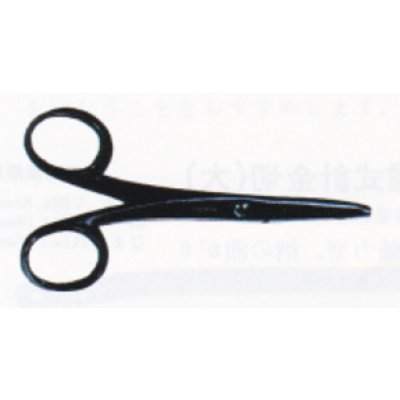
MAS-0010
Specially designed for thin wires at the top of branches or twigs.
0000 Standard carbon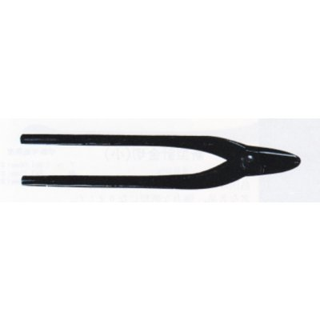
MAS-0018(L)
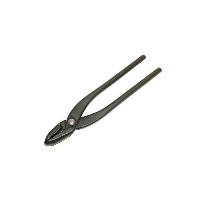
MAS-0018(S)
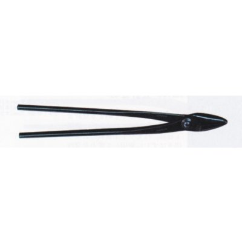
MAS-0118(L)
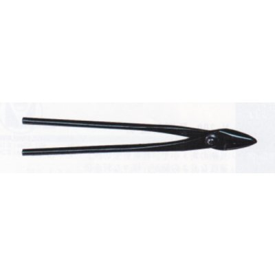
MAS-0118(S)
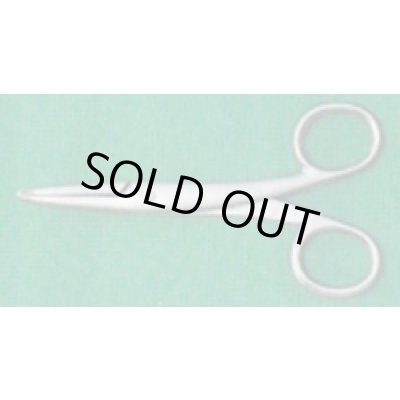
MAS-8010
Specially designed for thin wires at the top of branches or twigs.
8000 Stainless-coated carbon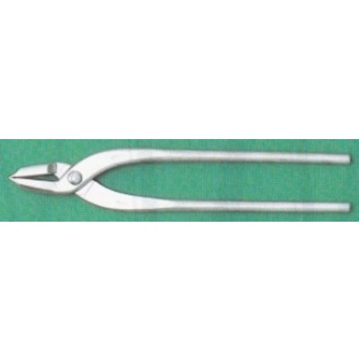
MAS-8018(L)
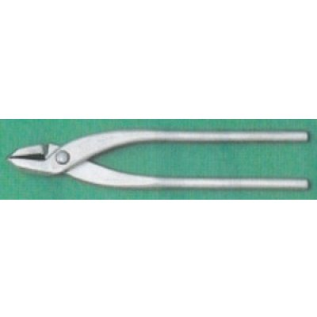
MAS-8018(S)
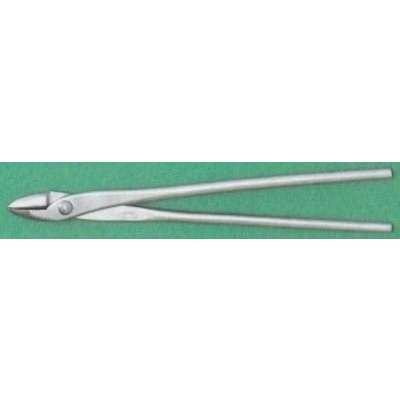
MAS-8118(L)
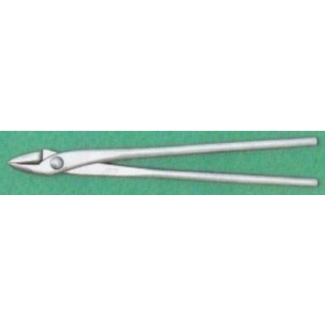
MAS-8118(S)
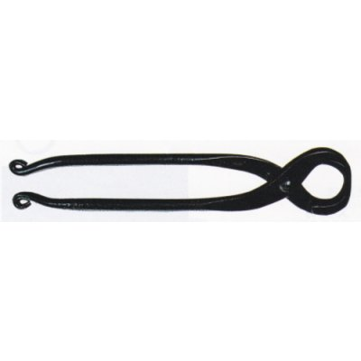
MAS-0014
Mighty cutter for heavy duty work.
0000 Standard carbon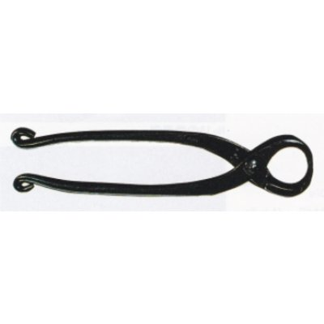
MAS-0015
Handy but mighty cutter for heavy duty work.
0000 Standard carbon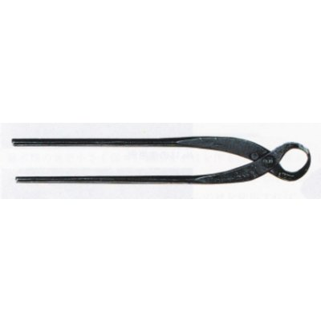
MAS-0040
Specially designed for easy-crack tree like SATSUKI AZALEA . Having the wide blade to make the one action cutting.
0000 Standard carbon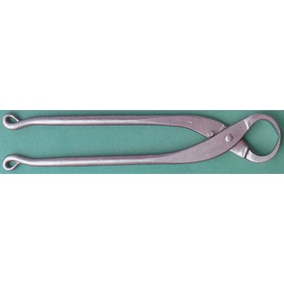
MAS-8014
Mighty cutter for heavy duty work.
8000 Stainless-coated carbon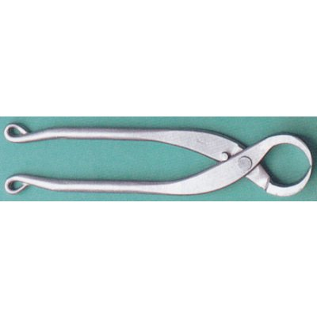
MAS-8015
Handy but mighty cutter for heavy duty work.
8000 Stainless-coated carbon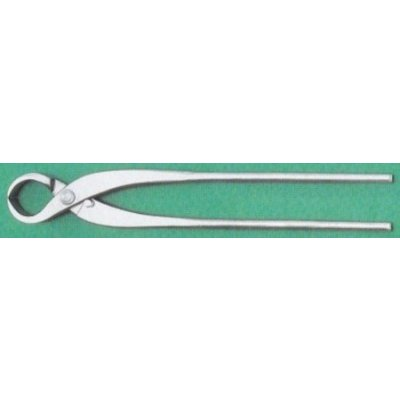
MAS-8040
Specially designed for easy-crack tree like SATSUKI AZALEA . Having the wide blade to make the one action cutting.
8000 Stainless-coated carbon
MAS-0035

MAS-0036
Specially designed for MAME Bonsai work.
0000 Standard carbon
MAS-0135

MAS-0235
The head angle brings the efficient work.
0000 Standard carbon
MAS-0335

MAS-0336
The blades are spherical form in order to make concave cutting as Nos.716 and 816.
0000 Standard carbon
MAS-8035

MAS-8036
Specially designed for MAME Bonsai work.
8000 Stainless-coated carbon
MAS-8135

MAS-8335

MAS-8336
The blades are spherical form in order to make concave cutting as Nos.716 and 816.
8000 Stainless-coated carbon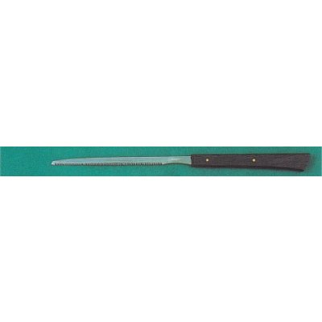
MAS-0138
138 is specially designed for the cutting in narrow places. The heavy duty No.338 is a mighty saw for rough work of SATSUKI AZALEA . * Click on the tool image for the large size picture.
0000 Standard carbon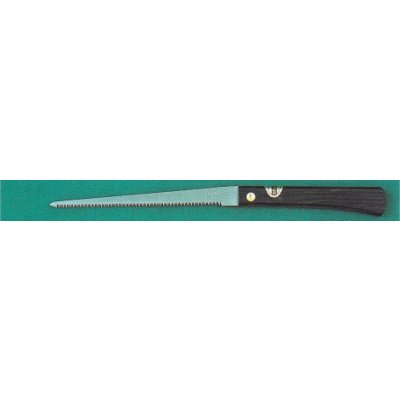
MAS-0138-B
138 is specially designed for the cutting in narrow places. The heavy duty No.338 is a mighty saw for rough work of SATSUKI AZALEA . * Click on the tool image for the large size picture.
0000 Standard carbon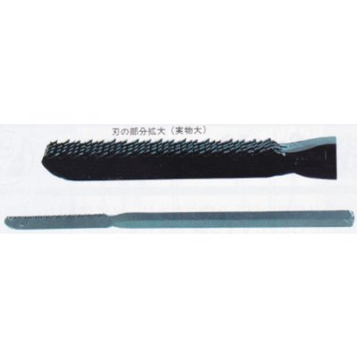
MAS-0238
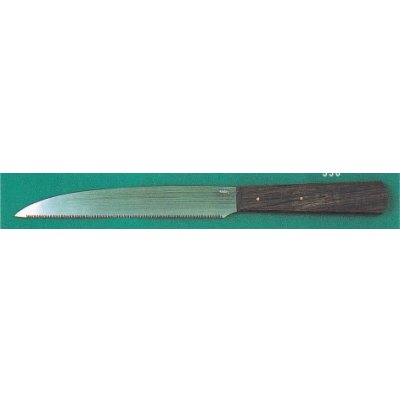
MAS-0338-B
Extra sharp saw for heavy duty. The sharpness brings the beautiful cutting end.
0000 Standard carbon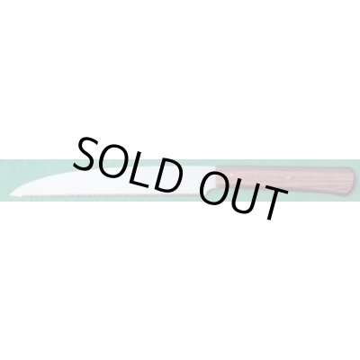
MAS-8338
Extra sharp saw for heavy duty. The sharpness brings the beautiful cutting end.
8000 Stainless-coated carbon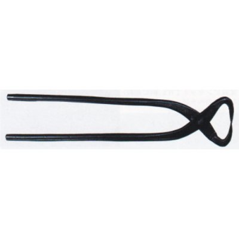
MAS-0113
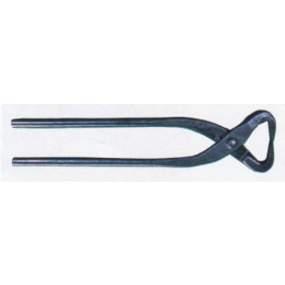
MAS-0114
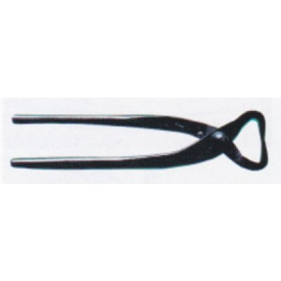
MAS-0115

MAS-0017
Specially designed for JIN making work only.
0000 Standard carbon
MAS-0117
Heavy duty pliers for JIN making work only.
0000 Standard carbon
MAS-0817

MAS-0022(L)
MASAKUNI's high quality extra sharp grafting knife. There are 2 types, for Left handed use and Right handed use.
0000 Standard carbon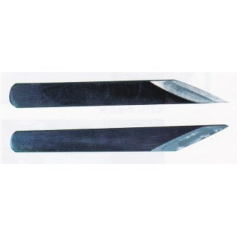
MAS-0022(R)
MASAKUNI's high quality extra sharp grafting knife. There are 2 types, for Left handed use and Right handed use.
0000 Standard carbon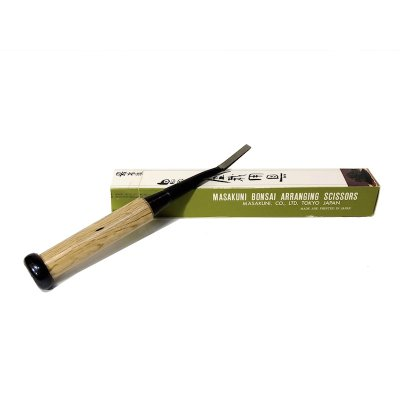
MAS-0038
Specially designed flat chisel for grafting. By this tool you can make branches at anywhere you want. There are 3 different sizes.
0000 Standard carbon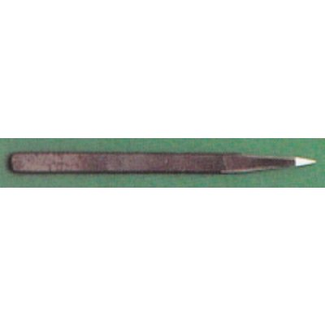
MAS-0038-B
Specially designed flat chisel for grafting. By this tool you can make branches at anywhere you want. There are 3 different sizes.
0000 Standard carbon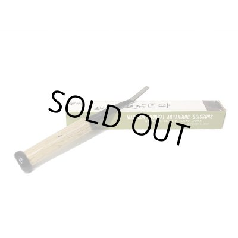
MAS-0038M
Specially designed flat chisel for grafting. By this tool you can make branches at anywhere you want. There are 3 different sizes.
0000 Standard carbon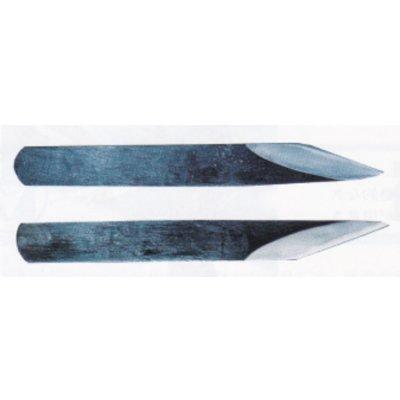
MAS-0222
Professional Grafting knife in the highest class.
0000 Standard carbon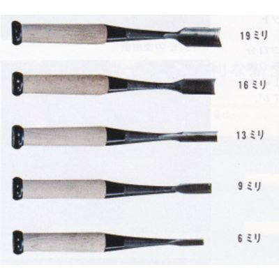
MAS-0039
Chisel for graving with wooden grip. There are 5 different sizes of edge.
0000 Standard carbon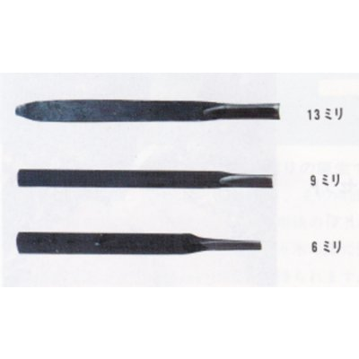
MAS-0139
Chisel for graving all steel type. There are 3 sizes of edge.
0000 Standard carbon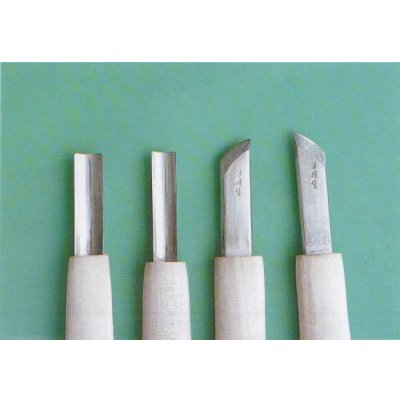
MAS-8021
There are 8 (A to H) different forms. Combination play brings the efficient work.
8000 Stainless-coated carbon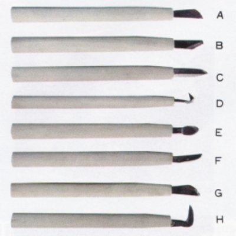
MAS-0021
There are 8 (A to H) different forms. Combination play brings the efficient work.
0000 Standard carbon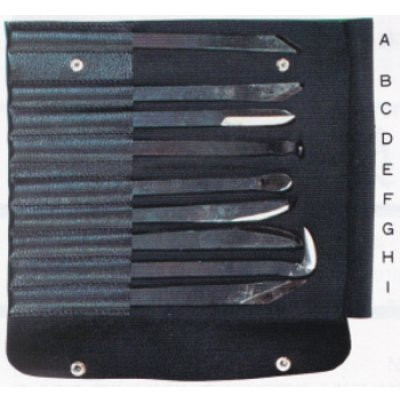
MAS-0121
Heavy duty Graver made of quality steel. There are 9 (A to I) different forms. Combination play brings the efficient work. Complete set is in case.
0000 Standard carbon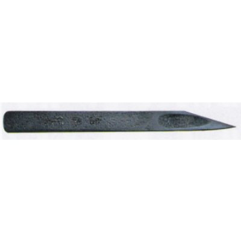
MAS-0122
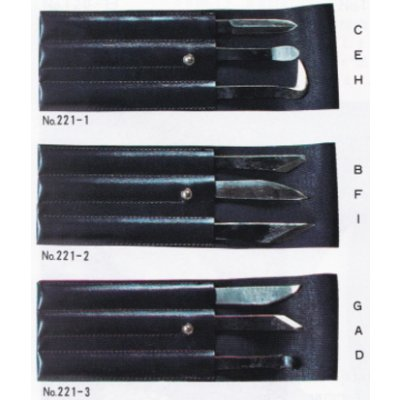
MAS-0221
221 GRAVERS SET (3 pcs. set, with case) 3 pcs. gravers set composed by your own sellection. There are 84 ways of combination. These photos are samples.
0000 Standard carbon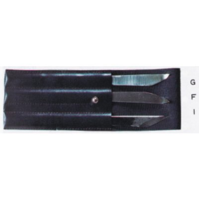
MAS-0321
321 GRAVERS SET for SATSUKI AZALEA Specially selected Gravers set which are so often used for SATSUKI AZALEA works.
0000 Standard carbon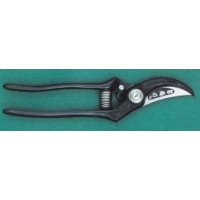
MAS-2001
2001 Pruning Shears for professional use ... The 2001 professional pruning shears are made of highest quality Swedish special steel and succeeding the world famous tradition of Japanese Sword in making process. The body is forged in a continuous operation and special heat treatment ensures the sharpness and durability of the blade. MASAKUNI's 2001 uses special large diameter stainless steel screws, which will not loosen even after extended use. The stainless steel spring will not weaken and a special hard rubber shock absorber and the handle itself have been designed to reduce fatigue. The supporting blade is specially designed to prevent sap from adhering to the blades. The stopper allows them to be locked and unlocked in one easy operation. Moreover, the stopper prevents the shears from opening too wide for easier handling.
SW Swedish special steel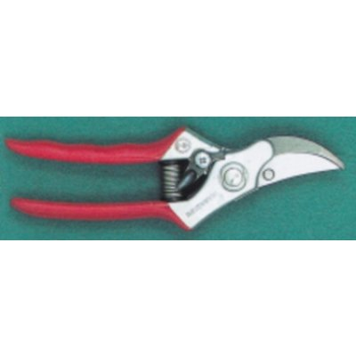
MAS-2010
Highest quality Compact and Light-weight Pruner.
SW Swedish special steelMAS-2020
Tilting-head shears for wide aplications. For Holticultural, Bonsai training, Gardenning, Flower Arranging, Pomecultural use etc.
SW Swedish special steelMAS-3001
High quality leather sheaths designed for 2001. Easy to put on the belt by hook behind.
LeatherMAS-8210
MAS-8220
MAS-8881
MAS-0500
Highest quality extra sharp gardening shears.( Karikomi ) (Made-to-order).
0000 Standard carbonMAS-0500-B
Highest quality extra sharp gardening shears.( Karikomi ) (Made-to-order).
0300 Custom / made-to-orderMAS-0501
Light-weight shears for efficient work.
0000 Standard carbonMAS-0502
Long blade shears for JUNIPERS.
0000 Standard carbonMAS-0503
Heavy duty shears for gardening.
0000 Standard carbonMAS-0504
Suitable for Flowering.
0000 Standard carbonMAS-8501
Light-weight shears for efficient work.
8000 Stainless-coated carbonMAS-8503
Heavy duty shears for gardening.
8000 Stainless-coated carbonMAS-0011
MASAKUNI's very famous No.11 Bonsai Tweezers. The useful trowel-head can be aplied for many Bonsai works.
Carbon steelMAS-0012
Specially designed Bonsai Tweezers for moss putting or removing spiders and webs.
Carbon steelMAS-0013
This is a thin steel stick of which both ends have special forms. Very useful for washing root in detail part and removing insects on the trees.
Carbon steelMAS-0013-A
This is a thin steel stick of which both ends have special forms. Very useful for washing root in detail part and removing insects on the trees.
Carbon steelMAS-0013-B
This is a thin steel stick of which both ends have special forms. Very useful for washing root in detail part and removing insects on the trees.
Carbon steelMAS-0027
Also the very famous No.27 Bonsai Tweezers of MASAKUNI. The trowel-head form is different from No.11. Wide aplications.
Carbon steelMAS-0111
High quality Bonsai Tweezers.
Stainless steelMAS-0127
High quality Bonsai Tweezers.
Stainless steelMAS-0311
Specially designed long type durable Tweezers.
Carbon steelMAS-0803
MAS-0811
MAS-0812
MAS-8811
MAS-8812
MAS-0029

MAS-S-0029
MAS-0030

MAS-S-0030
MAS-S-0290
MAS-8030
MAS-8130
MAS-0023
MAS-0024
MAS-0025
MAS-0026
MAS-0226
Suitable for SATSUKI AZALEA.
Carbon steel
MAS-0230(L)
Use with Nos.23 or 24 for the exact operation.
Carbon steelMAS-0230(S)
Use with Nos.23 or 24 for the exact operation.
Carbon steelMAS-0019
Convinient tool for finishing the soil surface. The form is specially designed in order to go along the inside edge of any kinds of pot, round or square. Made of brass.
Carbon steelMAS-0020
MAS-0037
By this tool you can separate the soil mass from the pot and make it easy to remove the tree from the pot even if the pot's edge is curving inside.
Carbon steelMAS-0041(A)
Removing the soil from root.
Carbon steelMAS-0041(B)
Removing the soil from root.
Carbon steelMAS-0120-B
Specially designed trowel for wide aplications. Made of stainless steel.
Stainless steelMAS-0341
Inevitable tool for repotting. Simple but for very wide aplications.
Carbon steelMAS-0341-B
Inevitable tool for repotting. Simple but for very wide aplications.
Carbon steelMAS-0700
For putting or removing the soil among the root. Mild tool never hurting roots.
BambooMAS-0800
Scooping soil with this tool, you can shake off smashed powder soil, which is no good for root breathing.
WoodMAS-0900
Highest quality traditional wooden Sieves set. These SIEVES set can supply every grain size of the soil for Bonsai.
WoodMAS-1001
800ml.
Copper
MAS-1002
MAS-1003
4l Only (B) is with 2 nozzles, straight and diagonal.
Copper
MAS-1004
5l With 2 Nozzles, straight an diagonal.
CopperMAS-1005
Highest quality Nozzle. The net plate is made of brass or copper.
Carbon steel
MAS-1006
Highest quality Nozzle. The net plate is made of brass or copper.
Carbon steelMAS-0031
The best-seller set of MASAKUNI. For wide aplications. It is MASAKUNI's great honor that this set was selected and bought by the former Emperor of Japan in 1967.
Mixed setMAS-0032
Wide aplication set teaturing Nos.8 and 16.
Mixed setMAS-0033
The most suitable set for beginners.
Mixed setMAS-0034
The most basic tool set.
Mixed setMAS-0132
Especially composed for small Bonsai work.
Mixed setMAS-0231
Composed by specially made quality tools.
Mixed setMAS-0232
Composed by the specially made quality tools.
Mixed setMAS-0233
Composed by the specially made tools.
Mixed setMAS-0234
Featuring specially made No.102.
Mixed setMAS-0331
Heavy duty tool set featuring Nos.40 and 338.
Mixed setMAS-0332
Suitable for repotting of SATSUKI AZALEA.
Mixed setMAS-0381
381 CUSTOM MADE 9pcs.SET in Leather case (Made-to-order) MASAKUNI's top quality tool set. The user's name will be engraved on the tools by golden letters.
LeatherMAS-600-E
Arrange and finish the soil surface.
Stainless steelMAS-8031
The best-seller set of MASAKUNI. For wide aplications. It is MASAKUNI's great honor that this set was selected and bought by the former Emperor of Japan in 1967.
Mixed setMAS-8032
Wide aplication set teaturing Nos.8 and 16.
Mixed setMAS-8033
The most suitable set for beginners.
Mixed setMAS-8034
The most basic tool set.
Mixed setMAS-8132
Especially composed for small Bonsai work.
Mixed setMAS-1800
MAS-1800-B
MAS-0600
Arrange and finish the soil surface.
Hemp-palmMAS-0600-C
Arrange and finish the soil surface.
Stainless steelMAS-600-SS
Arrange and finish the soil surface.
Stainless steelMAS-MN-0301
MAS-1400
MAS-1500
MAS-1510
MAS-1550